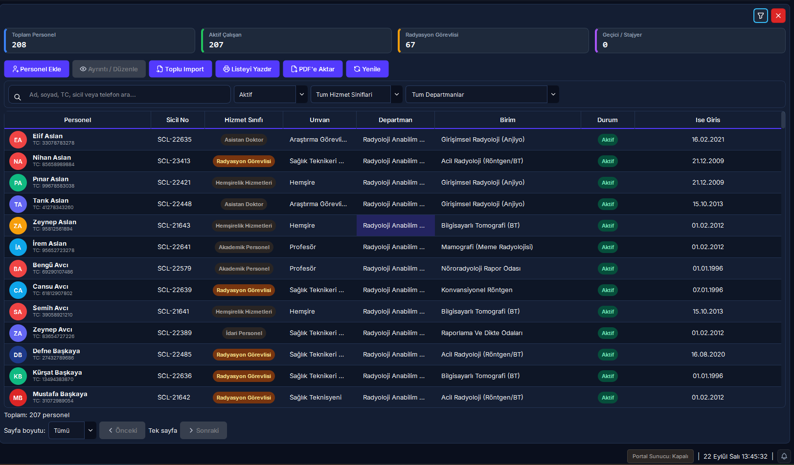
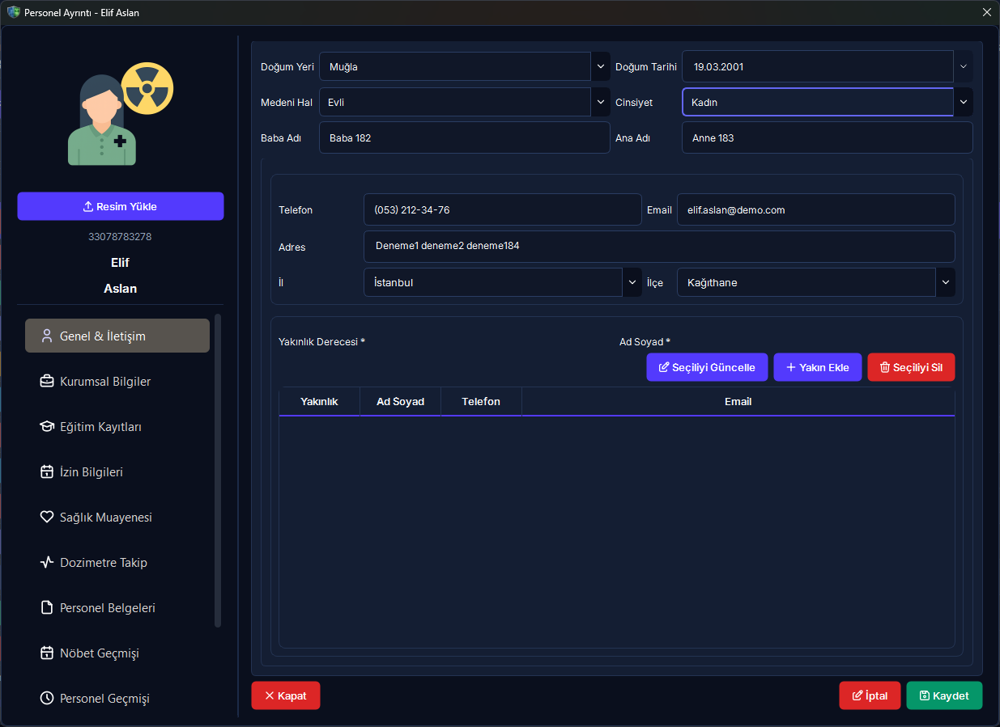

Personel Yönetimi, Lisans Kotası & Toplu İçe Aktarım
Radyasyonla çalışan personelin özlük, lisans, unvan, görev yeri, radyasyon çalışma grubu (A/B), lisans kotası, sağlık muayeneleri, zimmetli koruyucu ekipman (RKE), gebe/emzirme kalkanı ve 30 yıllık yasal KVKK arşiv yönetim rehberi.
Hızlı Reçete: Personel Yaşam Döngüsü ve Yasal Uyum
Radyasyon çalışanlarını kurum lisans kotası dahilinde kaydetmek, sağlık ve dozimetrik geçmişlerini kesintisiz yönetmek.
[Yeni Personel Ekle] ile kayıt açın, gebe/emzirme durumunu bildirin, ayrılışta zimmetleri kapatıp 30 Yıllık KVKK Arşiv Paketini (ZIP) oluşturun.
Kota aşımı engellenir; gebe personelin nöbeti sıfırlanıp dozu 1 mSv'e kilitlenir; ayrılan personelin yasal kayıtları 30 yıl saklanmak üzere şifrelenir.
5N1K Kural ve Fonksiyon Tablosu
Personel yönetimi, lisans denetimi, arama filtreleri ve toplu aktarım araçlarının işleyişi.
Kritik Sahada Yanlış Bilinen Kurallar (Mit Avcısı)
Saha Mit Avcısı: "İşten Ayrılan Personeli Silersek Doz ve Sağlık Kayıtları Yok Olur mu?"
En Sık Karşılaşılan Yasal YanılgıYanlış İnanış: "İşten çıkan personeli silersek veritabanından tamamen uçar, geçmiş doz kayıtları ve sağlık raporları kaybolur; lisans kotasından düşsün diye kaydı silmemiz şarttır."
Doğru Gerçek: KESİNLİKLE HAYIR. NDK Radyasyon Güvenliği Yönetmeliği, 6331 sayılı İSG Kanunu ve EURATOM direktifleri uyarınca radyasyon çalışanlarının tüm periyodik sağlık raporları ve dozimetrik geçmişi 30 yıl boyunca saklanmak zorundadır. RADPYS'de ayrılan personel veritabanından kalıcı olarak silinmez; durumu "Ayrıldı / Arşivlendi" statüsüne alınarak lisans kotasından düşürülür. Ayrılış anında personelin tüm 30 yıllık geçmişini içeren şifreli `kvkk_arsiv_{tc}.zip` yasal paketi oluşturularak arşiv kasasında güvence altına alınır.
Personel Yaşam Döngüsü ve Mevzuat Akış Şeması
Personel kaydı, lisans kotası denetimi, gebe koruma kalkanı ve ilişik kesme adımları.
Arayüz Ekran Görünümleri
Personel Listesi, dinamik arama paneli ve detaylı personel kartı görünümleri.


Adım Adım İşlem Rehberi
Saha operasyonlarında en sık kullanılan 5 ana işlemin uygulama adımları.
Yeni Personel Kaydı Açma ve Lisans Kotası Doğrulama
- Personel Listesi ekranının sol üst köşesindeki [Yeni Personel Ekle] butonuna tıklayın.
- Sistem arka planda kurum lisansının aktif personel kotasını sorgular. Kota dolu ise ekranda bilgilendirme modalı açılır.
- Formdaki zorunlu alanları doldurun:
- TC Kimlik No: 11 haneli geçerli MERNIS algoritmasına uygun numara.
- Ad, Soyad ve Sicil No.
- Birim ve Görev / Unvan: Radyoloji, Nükleer Tıp veya Radyasyon Onkolojisi seçimi.
- Radyasyon Çalışma Grubu: Grup A (Aylık Dozimetre) veya Grup B (3 Aylık Dozimetre).
- Personelin programa kendi şifresiyle girmesi gerekiyorsa [Sistem Kullanıcı Hesabı Oluştur] kutusunu işaretleyip rolünü seçin.
- [Kaydet] butonuna basarak işlemi tamamlayın. Onay gerektiren bir roldeyseniz kayıt RGS onay kuyruğuna iletilecektir.
Personel Detaylarını Güncelleme ve Doz / Sağlık Takibi
- Tabloda aradığınız personelin satırına çift tıklayın veya satır sonundaki [Düzenle] butonuna basın.
- Açılan Personel Detay Kartı penceresinde ilgili sekmeye geçin:
- Özlük Bilgileri: İletişim, adres, kan grubu, acil durum irtibatı.
- Radyasyon Bilgileri: Grup A/B tercihi, TENMAK/NDK servis sağlayıcı kodu.
- Zimmetler: Üzerine kayıtlı kurşun önlük, tiroid koruyucu ve aktif dozimetreler.
- Sağlık Muayeneleri: İşe giriş ve periyodik hemogram/dermatoloji kontrol tarihleri.
- Güncellemeleri tamamladıktan sonra [Değişiklikleri Kaydet] butonuna basarak formu kapatın.
Gebe ve Emziren Personel Koruma Protokolünün Devreye Alınması
- İlgili kadın personelin detay kartını açarak [Sağlık & Koruma] sekmesine gelin.
- [Gebelik Durumu Bildirimi] kutusunu işaretleyin; hekim raporundaki gebelik başlangıç tarihini ve tahmini doğum tarihini girin.
- [Kaydet] butonuna bastığınız anda RADPYS güvenlik motoru:
- Personelin yıllık etkin doz eşiğini mevzuat uyarınca 1 mSv değerine sabitler.
- Nöbet planlama modülünde personelin gece vardiyası ve fazla mesai almasını otomatik olarak engeller.
- Radyasyon Güvenlik Sorumlusu (RGS) paneline anlık uyarı bildirimi gönderir.
- Doğum gerçekleştiğinde aynı sekmeden [Emzirme Durumu] seçilerek koruma süreci 1 yıl daha uzatılabilir.
İşten Ayrılış, Zimmet İadesi ve 30 Yıllık KVKK Arşiv Paketi
- İşten ayrılan personelin satır işlem menüsünden [İlişik Kes / Arşivle] butonuna basın.
- Sistem personelin zimmet dökümünü kontrol eder:
- Üzerinde zimmetli kurşun önlük, koruyucu gözlük vb. varsa sistem "İade Edilmemiş RKE Bulunmaktadır" uyarısı verir.
- Aktif periyot dozimetresi teslim edilmemişse uyarı çıkar.
- Zimmetler depoya iade edildikten sonra ayrılış tarihini ve nedenini girerek onay verin.
- Sistem personeli "Ayrıldı" statüsüne alıp lisans kotasını serbest bırakır.
- Otomatik olarak NDK mevzuatı gereği 30 yıl saklanacak olan `kvkk_arsiv_{tc}.zip` kriptolu arşiv dosyasını bilgisayarınıza indirmeniz için dosya kaydetme penceresi sunar.
5 Adımlı Evrensel İçe Aktarım Sihirbazı ile Toplu Veri Yükleme
- 1. Adım (Veri Kaynağı ve 2 Sayfalı Şablon): [Toplu İşlemler] menüsünden [Örnek Excel Şablonu İndir] butonuna tıklayın. İndirilen dosya 2 sayfadan oluşur:
- Veri Listesi Sekmesi: Personellerin TC Kimlik No, Ad, Soyad, Sicil No, Departman ve Görev bilgilerinin girileceği alandır. Sayısal veri kayıplarını ve baştaki sıfırların silinmesini önlemek için hücreler kurumsal metin biçiminde kilitlenmiştir.
- Geçerli Değerler Kılavuzu Sekmesi: Sisteminizde halihazırda tanımlı olan aktif departmanlar, unvanlar ve izin türleri bu sayfada referans liste olarak sunulur; hatalı yazımların önüne geçilir.
- 2. Adım (Akıllı Sütun Eşleştirme): Sistem dosyanızdaki sütun başlıklarını otomatik olarak algılar ("T.C.", "TC Kimlik No", "Adı Soyadı" gibi eşanlamlılar doğrudan eşleşir). Eşleşmeyen opsiyonel sütunları açılır kutulardan seçebilir veya eşlemeyi özelleştirebilirsiniz.
- 3. Adım (Dinamik Değer Sözlüğü Çözümleme): Excel dosyanızdaki bir departman veya unvan sistemde birebir bulunamadığında sihirbaz duraksamaz; her bilinmeyen değer için 3 esnek seçenek sunar:
- Var Olanla Eşleştir: Sistemdeki mevcut bir departman veya unvana bağlayın.
- Yeni Tanım Olarak Ekle: Sisteme yetkiniz dahilinde yeni bir tanım olarak kaydedilmesini sağlayın.
- Satırı Atla: Bu değeri içeren satırları içe aktarımdan hariç tutun.
- 4. Adım (Önizleme & Kapsamlı Doğrulama - Dry Run): Veritabanına hiçbir kayıt yazılmadan önce simülasyon çalıştırılır:
- Geçerli Kayıtlar: Yeşil rozetle gösterilir; doğrudan aktarıma hazırdır.
- Uyarılar: Sarı rozetle vurgulanır; mükerrer isim veya eksik opsiyonel alanları gösterir.
- Hatalı Kayıtlar: Kırmızı rozetle işaretlenir; geçersiz TC Kimlik, aktif kota aşımı veya eksik zorunlu alanlar gerekçesiyle listelenir. Tablo üzerindeki filtreleme sekmeleriyle hataları anında ayıklayabilirsiniz.
- 5. Adım (Asenkron Arka Plan Aktarımı & Hata Raporu): [Aktarımı Başlat] butonuna bastığınızda aktarım arka planda yürütülür; binlerce satırlık listelerde dahi program donmaz veya kilitlenmez. İşlem tamamlandığında otomatik oluşturulan kullanıcı hesaplarının şifre dökümü sunulur; aktarılamayan hatalı satırlar varsa [Hataları Excel Olarak İndir] butonu ile hata gerekçeleriyle birlikte raporlanır.
Sıkça Sorulan Sorular (SSS)
Kuruluş lisans kotamız dolduğunda yeni personel ekleyebilir miyiz? ▾
Hayır. RADPYS lisans sözleşmenizdeki aktif personel kotası aşıldığında sistem yeni personel kaydını engeller ve kota artırımı için yöneticinize bildirim yapmanızı önerir. Ancak işten ayrılan eski personellerin ilişiği kesilip arşivlendiğinde, boşalan kontenjan kadar yeni personel kaydı anında açılabilir.
Personel TC Kimlik Numarası girildiğinde sistem neden hata veriyor? ▾
RADPYS, NDK ve Sağlık Bakanlığı resmi bildirimlerinde mükerrer veya sahte kayıt oluşmasını önlemek amacıyla MERNIS 11 haneli matematiksel algoritma kontrolü uygular. İlk hanesi 0 olan veya sağlama toplamı tutmayan TC kimlik numaraları sistem tarafından reddedilir. Ayrıca aynı TC numarası ile sistemde zaten aktif bir kayıt varsa mükerrer kayıt uyarısı verilir.
Gebe personel doğum yaptıktan sonra koruma kalkanı devam eder mi? ▾
Evet. İlgili mevzuat uyarınca doğum sonrası emzirme döneminde de personelin radyoaktif kontaminasyon riski bulunan sahalarda çalışması ve gece nöbeti tutması kısıtlıdır. Personel detay kartındaki [Emzirme Durumu] seçeneği işaretlendiğinde koruma kalkanı doğum tarihinden itibaren tam 1 yıl boyunca otomatik olarak devrede kalmaya devam eder.
İşten ayrılan personelin üzerinde zimmetli kurşun önlük kalırsa ne yapılmalıdır? ▾
Sistem, kurum demirbaşlarının kaybolmasını ve sahipsiz radyasyon koruyucu ekipman kalmasını önlemek için ilişik kesme anında zimmet denetimi yapar. Personel Detay Kartı > Zimmetler sekmesinden veya RKE Modülü üzerinden ilgili ekipman "Depoya İade Edildi" olarak işaretlenmeli, ardından personelin ilişik kesme ve arşivleme işlemi onaylanmalıdır.
Web portalından eklenen personel masaüstü uygulamasında hemen görünür mü? ▾
Evet. Web portalı ile masaüstü uygulaması aynı merkezi PostgreSQL veritabanını paylaşır. Web portalından veya mobil arayüzden yapılan tüm personel ekleme, güncelleme ve ayrılış işlemleri masaüstü ekranındaki [Yenile] butonuna basıldığında veya tablo açıldığında anında eşzamanlı olarak yansır.
Toplu personel Excel'i yüklerken dosyadaki departman veya unvan sistemde yoksa ne olur? ▾
RADPYS Evrensel İçe Aktarım Sihirbazı işlemi durdurmaz veya tüm dosyayı reddetmez. 3. Adımda (Dinamik Değer Çözümleme) sistemde eşleşmeyen her bir tanımsız değer için size seçenek sunar: İlgili değeri sistemdeki mevcut bir departman/unvanla eşleyebilir, yetkiniz dahilinde sisteme otomatik yeni tanım olarak ekleyebilir ya da yalnızca o satırları atlayarak diğer personellerin aktarımını başarıyla tamamlayabilirsiniz. Ayrıca indirilen şablonun ikinci sayfasındaki [Geçerli Değerler Kılavuzu] sekmesine bakarak sisteminizdeki tam isimleri önceden inceleyebilirsiniz.